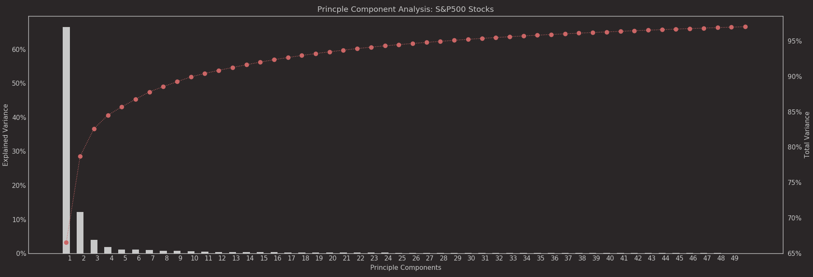
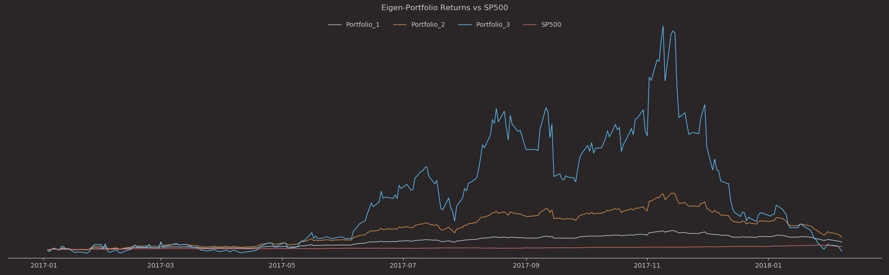

Portfolio Optimization
There are numerous studies dedicated to efficient portfolio selection. As a general rule to portfolio creation, one should diversify funds to maximize returns and minimize risk (Harry Markowitz “Portfolio Selection”, 1952). In his paper, Markowitz presents several rules when selecting a portfolio: first, one should diversify and place funds into securities with the maximum anticipated returns (maximize returns). Second, select a portfolio with minimum variance of expected return (minimize risk). A decade later, William Sharpe (“The Sharpe Ratio”, 1966) introduced a metric known as the Sharpe Ratio that quantifies the risk-to-reward relationship described by Markowitz.
How can we methodically select a portfolio that both maximizes return and minimize risk? I will walk through a technique of portfolio selection using the principles of Markowitz and Sharpe on stocks listed in the S&P500 with the goal of optimizing return and minimizing risk.
Quantifying Risk vs Reward
Portfolio optimization requires the balancing of risk and return. We know that the portfolio with the greatest expected return is not the necessarily the one with least volatility. We will use historical S&P500 returns and calculate the variance of these returns as a measure of ‘risk’. To quantify expected returns, I gathered 5-years worth of S&P 500 Stock returns. The data was normalized to compute the simple returns. Next, I needed to quantify risk - which is simply the variance of our expected returns (the fluctuations in the expected returns over time). Markowitz based his models on the assumption that returns are normally distributed, therefore an estimation of variance can be obtained using the covariance matrix of historical returns.
Market Exposure
We want to determine the market exposure for our each portfolio using the covariance matrix of the returns. This is obtained by decomposing the covariance matrix resulting in a vector of weights that represent the percentage of total portfolio holdings (eigenvectors). This is done using an unsupervised learning technique called Principal Component Analysis (PCA). PCA helps us reduce the dataset by finding a set of equivalent features that retains 99% of the variance in the original data. The eigenvectors and eigenvalues determine the location and distance between each feature in the new dimensional space.
pca = PCA()
pca.fit(covariance)
var_ratio = np.cumsum(pca.explained_variance_ratio_)
n_components = np.where(np.logical_not(var_ratio < 0.8))[0][0]+1
projected = pca.fit_transform(covariance_raw)
logger.info('Number of components {}'.format(n_components))

Portfolios Holdings
With the portfolios compiled, lets explore the top 5 holdings in each portfolio:
Portfolio 1: Sharpe Ratio - 7.82
| Ticker | Holdings (%) | Security Name | Industry |
|---|---|---|---|
| ADI | 33.3474 | Analog Devices, Inc. | Information Technology |
| COO | 22.9322 | The Cooper Companies | Health Care |
| GOOG | 21.8156 | Alphabet Inc Class C | Communication Services |
| AON | 21.1057 | Aon plc | Financials |
| ADS | 19.6139 | Alliance Data Systems | Information Technology |
Portfolio 2: Sharpe Ratio - 6.94
| Ticker | Holdings (%) | Security Name | Industry |
|---|---|---|---|
| CL | 58.7249 | Colgate-Palmolive | Consumer Staples |
| BAX | 53.557 | Baxter International Inc. | Health Care |
| CFG | 53.1885 | Citizens Financial Group | Financials |
| CAH | 48.7005 | Cardinal Health Inc. | Health Care |
| CERN | 40.0978 | Cerner | Health Care |
Portfolio 3: Sharpe Ratio - 7.24
| Ticker | Holdings (%) | Security Name | Industry |
|---|---|---|---|
| ADI | 23.5063 | Analog Devices, Inc. | Information Technology |
| BAX | 22.192 | Baxter International Inc. | Health Care |
| CERN | 19.7601 | Cerner | Health Care |
| CB | 18.3078 | Chubb Limited | Financials |
| DLR | 18.2557 | Digital Realty Trust Inc | Real Estate |
Portfolio Performance
Now, lets look at each portfolio’s returns against the S&P500. Portfolio 1 has the highest Sharpe Ratio, meaning it provides the best 'risk adjusted' rewards compared to the other portfolios. 